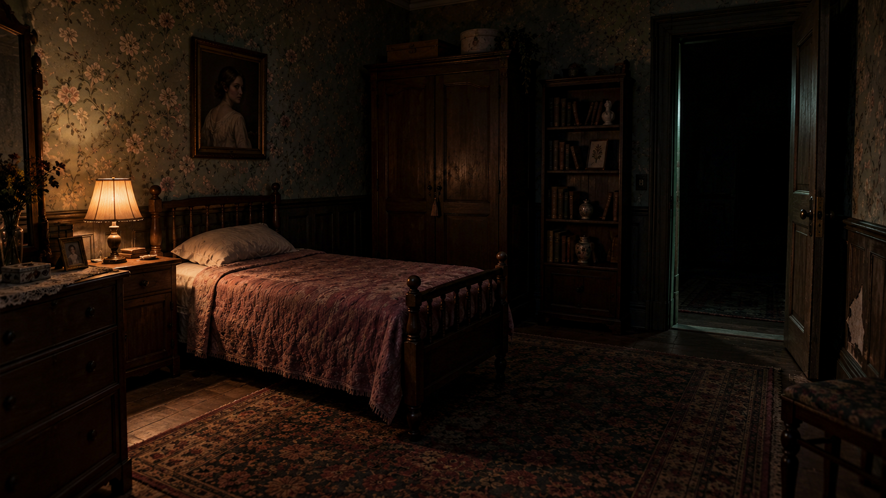
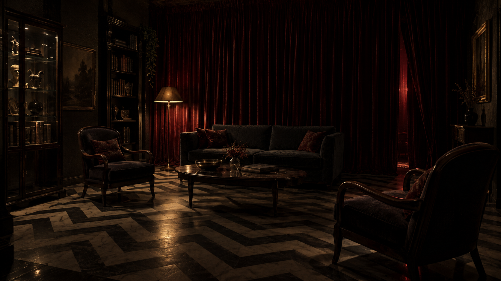
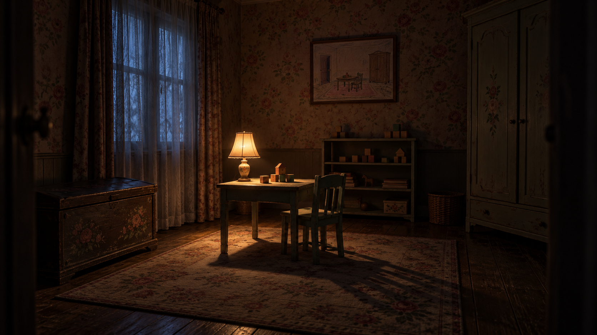
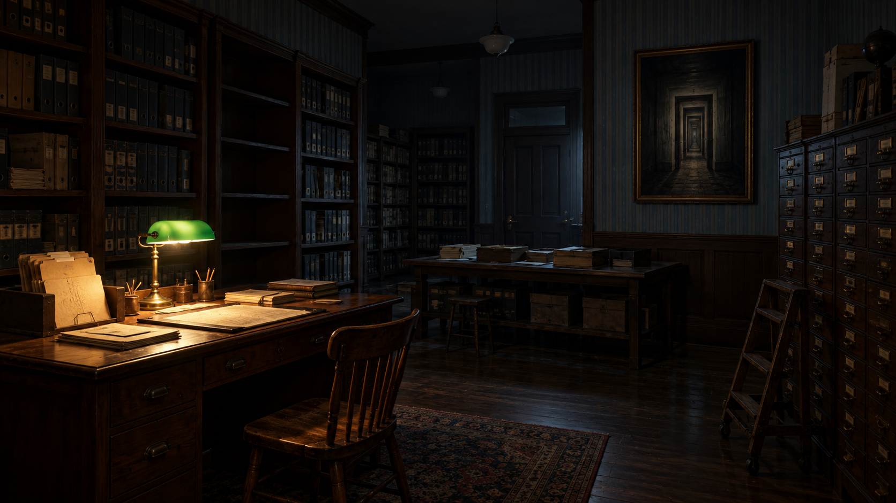
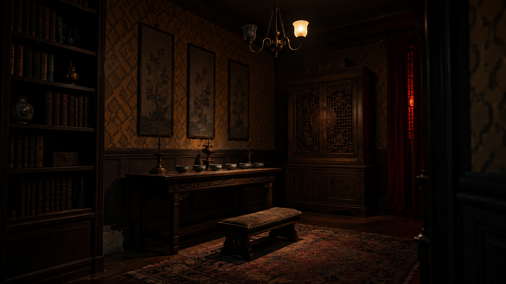
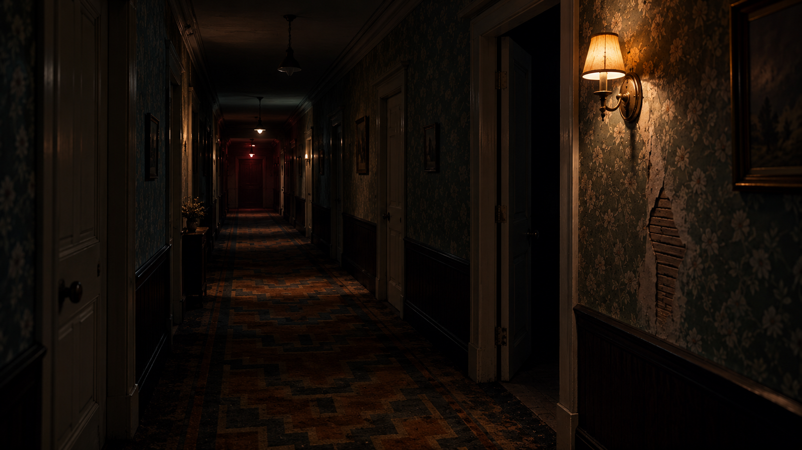

黑暗中的房间
六个房间主题 + 墙纸走廊。漂亮或破旧均保留黑暗主调；以局部光线显露家具、墙纸、帷幕和空间中的异样。
场景概念图，待你确认。此处构图不代表现有地图布局，也不是已接入游戏的画面。上一轮单件资产候选图继续保留。
旧卧室


空客厅


旧育儿室


诊疗室

旧档案室


供奉室


墙纸走廊

六个房间主题 + 墙纸走廊。漂亮或破旧均保留黑暗主调；以局部光线显露家具、墙纸、帷幕和空间中的异样。





